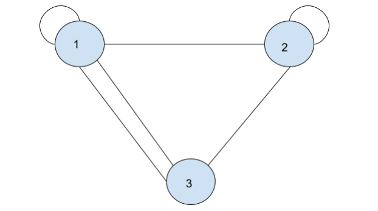
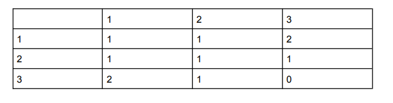
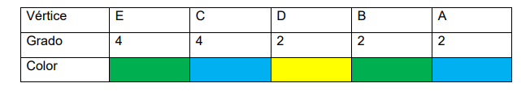
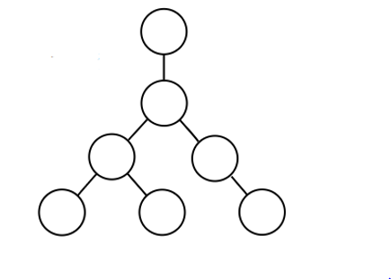
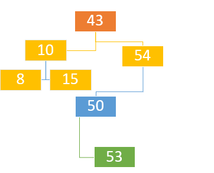
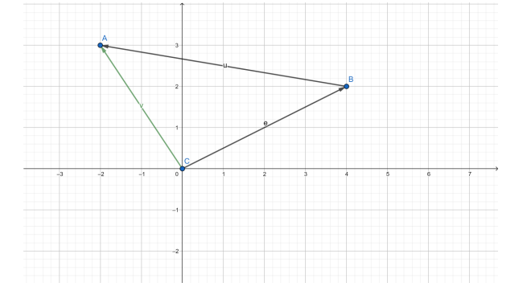
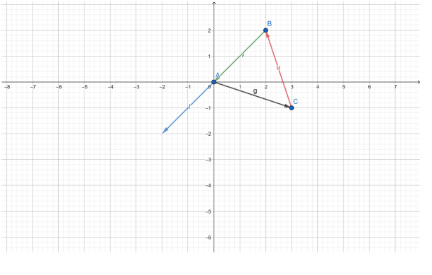
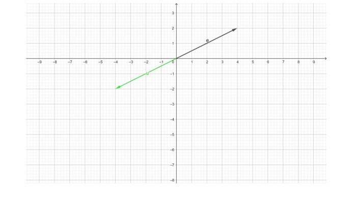

Ejemplos
Si se esta buscando un respuesto de una motocicleta y sabemos que ese repuesto esta en 3 tiendas del Barrio El Porvenir, 2 Barrio Chipilapa y 4 en Barrio San Francisco ¿Cuántas opciones de compra tenemos?
Respueta: 3+2+4 = 9 opciones
¿Cuántos resultados distintos se puede obtener si se lanza una moneda 3 veces?
Caras de la moneda: 2
Cantidad de lanzamientos: 3 veces
Respuesta: 2*2*2 = 8
Ejemplos
¿De cuántas maneras se pueden dar primer y segundo premio entre 10 personas?
Solución:
Formula: n!/(n-r)! = 10!/(10-2)! = 10!/8! = 10*9*8*7*6*5*4*3*2*1/8*7*6*5*4*3*2*1 = 3,628,800/40,320 = 90
Ejemplos
Si se tienen los conjuntos A= {X/X Números enteros positivos pares menores a 15} y B={2, 4, 6, 8, 10, 12, 14}, ¿Qué relación de conjuntos se puede representar?
Respuesta: Inclusion por que si estan incluidos los numero menores pares a 15
A = {2, 4, 6, 8, 10}
B = {1, 2, 3, 4, 5}
C = {3, 6, 9,}
Respuesta: A U B U C = (1,2,3,4,5,6,8,9,10)
A = {1,2,3,7,9}
B = {2,9,5,6}
C = {2,3,5,6,9}
A ∩ B ∩ C = {2,9}
A = {1, 2, 3, 4, 5}
B = {0, 2, 4, 6, 8}
A - B = {1,3,5}
B - A ={0,6,8}
A= {1, 2, 3, 4, 5}
B = {0,2,4,6,8}
A+B = {1,3,5,0,6,8}
Ejemplos
1+2+3+...+n=n(n+1)/2
Demostrar mediante induccion matemática
Comprobar con 1: Sustituimos 1 por n
1=1(1+1)/2 = 1=1(2)/2 = 1=2/2 = 1 = 1
Comprobar con k: Sustituimos k por
k=k(k+1)/2
Demostrar con k+1: Sustituimos k+1 por n
k+1=k+1(k+1+1)/2 = k+1(k+2)/2
Comprobación:
k(k+1)/2 + k+1 = k(k+1)+2(k+1)/2 = (k+1)(k+2)/2
Respuesta: (k+1)(k+2)/2
Calcular el MCD de 95 y 322
322 = 95*3+37
95 = 37*2+21
37 = 21*1+16
21 = 16*1+5
16 = 5*3+1
5 = 1*5+0
Dibujar un grafo no orientado y su matriz de adyacencia según lo que expresan los siguientes conjuntos:
V = {1, 2, 3}
A = {1,1 1,2 1,3 2,2 2,3 3,1}
 Demostrar que los siguiente grafos son isomorfos
Dos grafos son isomorfos si sus matrices de adyacencia son iguales
Determine la ruta o ciclo de euler y ruta o ciclo de hamilton
Determine el grado Cromatico

Es conexo: si es conexo
Vertices de grado impar: c,e
Vertices de grado par: a,b,f,d
Respuesta: c, b, a, e, f, c, d, e
f, e, c, b, a… No se puede completar la ruta de hamilton
Grado Cromatico: 3
Ejemplo
Calcule el LCI, LCIM, LCE y LCEM

LCI: 1*1 = 1 2*2 = 4 3*4 = 12 4*2 = 8 1+4+12+8 = 26
LCIM: 25/9 = 2.77
LCE: 2*1 = 2 3*2 = 6 4*10 = 40 40+6+2 = 48
LCEM: 48/13 = 3.69
LCI: 1*1 = 1 2*1 = 2 3*2 = 6 4*3 = 12
LCIM: 12/7 = 1.71
LCE: 2*1 = 2 3*0 = 0 4*1 = 4 4+0+2 = 6

LCE: 6/2 = 3
Ejemplos
Libro
Capítulo 2
Sección 1.1
Sección 1.2
Sección 1.2.1
Sección 1.2.2
Capítulo 2
Sección 2.1
Sección 2.2
Sección 2.2.1
Sección 2.2.2
2 5 1 3 7
4 A 5 + 6 * 7
Z M W I
5 2 7 3 1
4 5 A 6 7 * +
Z W M I
Crear un arbol de busqueda con los siguiente dato
43, 10, 8, 54, 15, 50, 53
8, 10, 15, 43, 50, 53, 54
Ejemplo
e=(4,2) f=(-2,3) = e+f
g=(3,-1) l=(-2,2) = g-l
e = e*-1 = (4,2)*-1 = (-4,-2)

Al 25% de tus amigos le gusta la fresa y el chocolate, mientras que al 60% le gusta el chocolate. ¿Cuál es la probabilidad de que a un amigo que le gusta el chocolate, le guste la fresa?
Evento A: que a un amigo le gusten los fresa. P(A) = ?
Evento B: que a un amigo le guste el chocolate. P(B) = 60 %.
Evento A y B: que a un amigo le guste la fresa y el chocolate. P(A∩B) = 25 %.